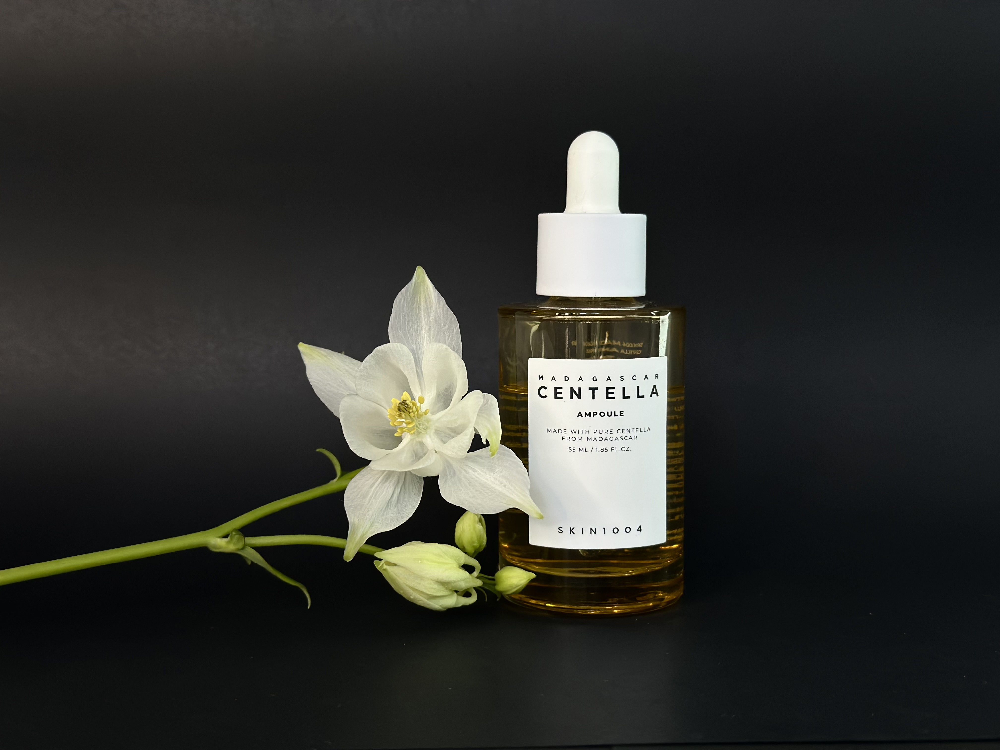

PROJEKT INFO
Fokuseret på at producere æstetiske produktfotos med et rent og professionelt udtryk. Billederne er udviklet med fokus på lys, komposition, farver og brandidentitet.
Målet var at skabe visuelle billeder, der kan bruges til sociale medier, webshops, kampagner og markedsføringsmateriale.
Jeg undersøgte visuelle trends inden for skønhedsproduktfotografering.
Jeg arbejdede med props såsom blomster, mørke og grønne baggrunde, lys og produktets visuelle udtryk.
Billederne er ikke blevet behandlet, men valgt med fokus på farver, kontrast og stemning.
Jeg lærte at arbejde mere bevidst med produktets visuelle identitet, billedkomposition og hvordan fotografi kan understøtte branding.